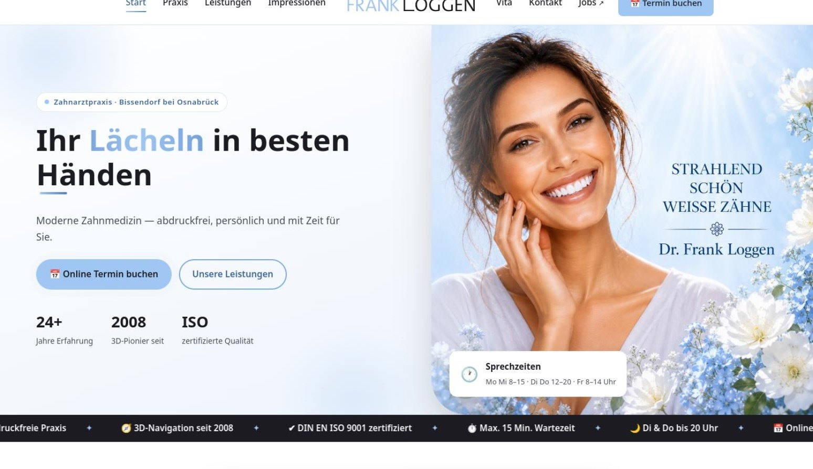
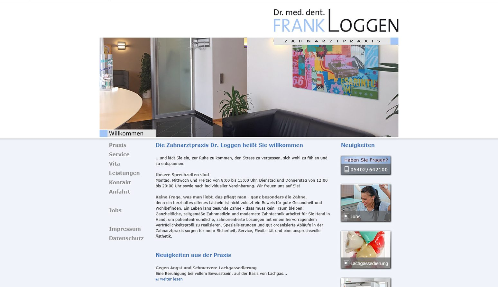

Termine rund um die Uhr
Die Online-Buchung von Dr. Flex ist eingebunden. „Termin buchen“ steht in der Navigation und an mehreren Stellen der Startseite – wer lieber anruft, findet die Nummer daneben.
Referenz · Zahnarztpraxis
Eine Praxis-Webseite für Bissendorf, über die Patienten rund um die Uhr einen Termin buchen können – und auf einen Blick sehen, was die Praxis besonders macht.

Ziehen Sie den Regler: links die alte Startseite (Stand Dezember 2025), rechts die neue.

Dr. med. dent. Frank Loggen führt eine moderne Zahnarztpraxis in Bissendorf. Die Webseite stellt die Praxis, Dr. Loggen selbst und die Behandlungsschwerpunkte vor.
Im Mittelpunkt stehen zwei Dinge: Patienten sollen ohne Umweg einen Termin buchen können, und sie sollen sofort sehen, was die Praxis auszeichnet – etwa die abdruckfreie Behandlung mit 3D-Scan und die 3D-Navigation von Implantaten seit 2008.
Jeder Bereich der Seite hat eine klare Aufgabe: informieren, Vertrauen aufbauen oder direkt zum Termin führen.
Die Online-Buchung von Dr. Flex ist eingebunden. „Termin buchen“ steht in der Navigation und an mehreren Stellen der Startseite – wer lieber anruft, findet die Nummer daneben.
Eine laufende Leiste zeigt, was die Praxis ausmacht: abdruckfrei, 3D-Navigation seit 2008, DIN EN ISO 9001, maximal 15 Minuten Wartezeit und Termine dienstags und donnerstags bis 20 Uhr.
Termin buchen, persönliche Beratung, moderne Behandlung – der Ablauf ist einfach erklärt und nimmt Unsicherheit vor dem ersten Besuch.
Sechs Schwerpunkte von Implantaten mit 3D-Navigation über DVT-Diagnostik bis Prävention – jeweils kurz beschrieben.
Fotos von Empfang, Behandlungsräumen, Wartebereich und 3D-Scan zeigen die Praxis so, wie Patienten sie erleben.
Jobs und Karriere sind direkt aus Menü und Footer erreichbar – für Bewerber genauso wichtig wie die Seite für Patienten.
Rückmeldung zur Zusammenarbeit und zur neuen Webseite.
Ich baue Praxis-Webseiten mit Online-Terminen, klaren Sprechzeiten und verständlichen Leistungen – zum Festpreis und persönlich betreut.
Festpreis ab 790 € · Antwort innerhalb von 24 Stunden
Noch mehr sehen? Hier geht es zum nächsten Projekt und zu allen Designbeispielen.
Studio-Webseite in Hasbergen mit Kursplan, Preisen und Angebotsformular.
Entwürfe für Praxis, Tischlerei, Café und Agentur – komplett zum Durchscrollen.
Worauf es bei einer Praxis-Webseite ankommt – mit Festpreisen.
Die drei Pakete im direkten Vergleich – mit allem, was enthalten ist.